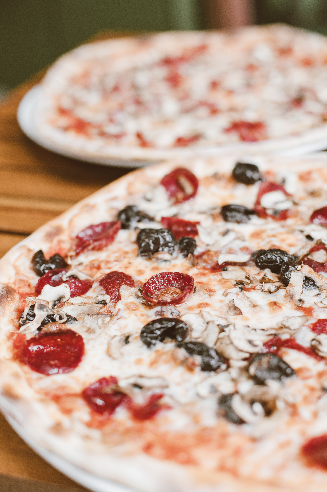

Pizza is an Italian dish typically consisting of a flat base of leavened wheat-based dough topped with tomato, cheese, and other ingredients, baked at a high temperature, traditionally in a wood-fired oven.
The term pizza was first recorded in AD 997, in a Latin manuscript from the southern Italian town of Gaeta, in Lazio, on the border with Campania. Raffaele Esposito is often credited with creating the modern version of pizza in Naples at the end of the 19th century.